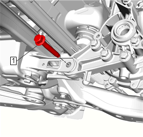
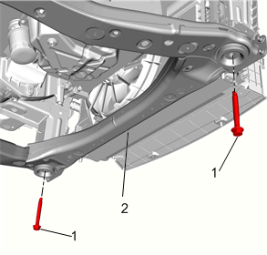
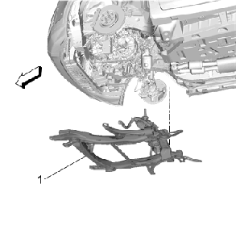

传动系统和前悬架支架的更换
专用工具
KM-507-C
球节拆缷工具
当地同等工具：
专用工具
拆卸程序
1.
举升并顶起车辆。
举升和顶起车辆
2.
中间转向轴@转向机»断开 –
中间转向轴的更换
3.
前轮»拆下 –
轮胎的拆卸和安装
4.
使用高度可调节的支撑工具支撑前横梁。
5.
前保险杠蒙皮»拆下 –
前保险杠蒙皮的更换
6.
前舱隔板»拆下 –
前舱隔板的更换
7.
前保险杠蒙皮下加强件»拆下 –
前保险杠蒙皮下加强件的更换
8.
散热器下托架»拆下 –
散热器下托架的更换
9.
使用
KM-507-C
球节拆缷工具
从转向节上断开下控制臂。
下控制臂的更换
10.
使用
KM-507-C
球节拆缷工具
从转向节上断开转向传动机构外转向横拉杆。
转向传动机构外转向横拉杆的更换
11.
稳定杆连杆@滑柱»断开 –
稳定杆连杆的更换

12.
后支座螺栓@变速器后支架（1）»拆下并报废
13.
排气前管»拆下 –
前排气管的更换

14.
传动系统和前副车架前螺栓（1） » 拆下并报废[2x]
15.
缓慢降下前车架支撑工具，降下前悬架横梁（2）。

16.
传动系统和前悬架支架（1）»拆下
17.
转向机@前车架»拆下 –
转向机的更换
18.
稳定杆»拆下 –
稳定杆的更换
19.
下控制臂»拆下 –
下控制臂的更换
20.
变速器支座柱»拆下 –
变速器支座柱的更换
安装程序
1.
变速器支座柱»安装 –
变速器支座柱的更换
2.
下控制臂»安装 –
下控制臂的更换
3.
稳定杆»安装 –
稳定杆的更换
4.
转向机@前车架»安装 –
转向机的更换
5.
在助手的帮助下, 将车身小心地降低到车架上（1）。
警告：
有关屈服力矩型紧固件的警告
告诫：
有关紧固件的告诫
注意:
安装新的传动系统和前副车架前螺栓。
6.
传动系统和前副车架前螺栓（1）»安装[2x]
紧固
•
第一遍：160N•m（118 lb ft）
•
最后一遍：45–60度
7.
传动系统和前副车架支架»安装 –
传动系统和前副车架支架的更换
8.
排气前管»安装 –
前排气管的更换
注意:
安装新的后支座至变速器后支架螺栓
9.
后支座螺栓@变速器后支架（1）»安装
紧固
•
第一遍：100N•m（74 lb ft）
•
最后一遍：30–45度
10.
稳定杆连杆@滑柱»连接 –
稳定杆连杆的更换
11.
将转向传动机构外转向横拉杆连接至转向节。
转向传动机构外转向横拉杆的更换
12.
将下控制臂连接至转向节。
下控制臂的更换
13.
散热器下托架»安装 –
散热器下托架的更换
14.
前保险杠蒙皮下加强件»安装 –
前保险杠蒙皮下加强件的更换
15.
前舱隔板»安装 –
前舱隔板的更换
16.
前保险杠蒙皮»安装 –
前保险杠蒙皮的更换
17.
前轮»安装 –
轮胎的拆卸和安装
18.
中间转向轴@转向机»连接 –
中间转向轴的更换
19.
降下车辆。